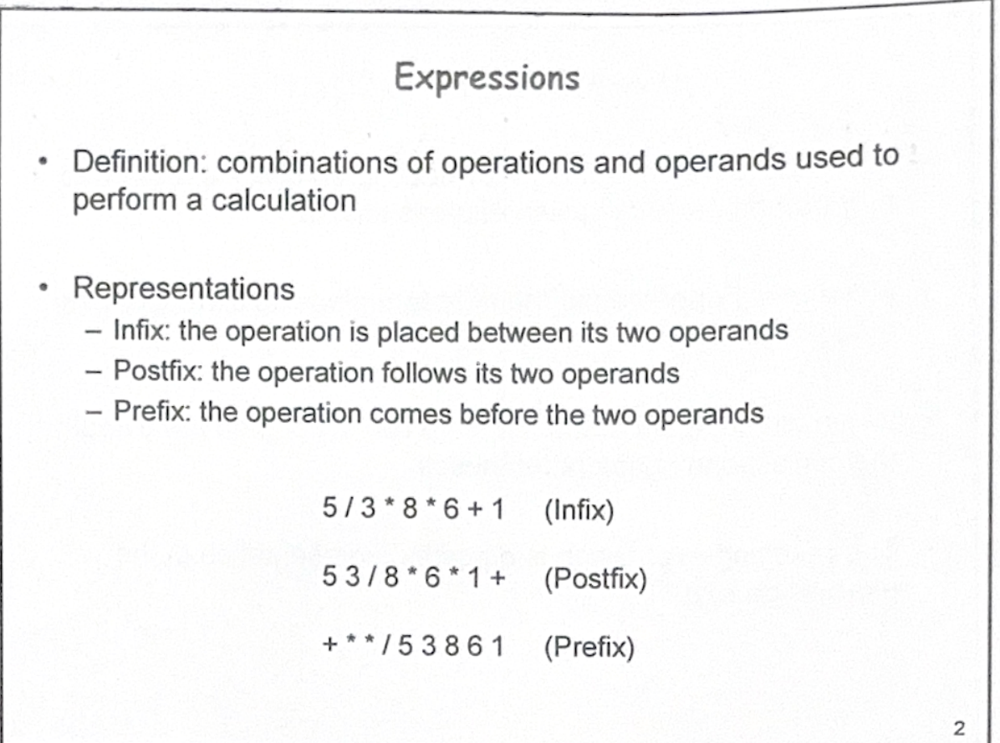
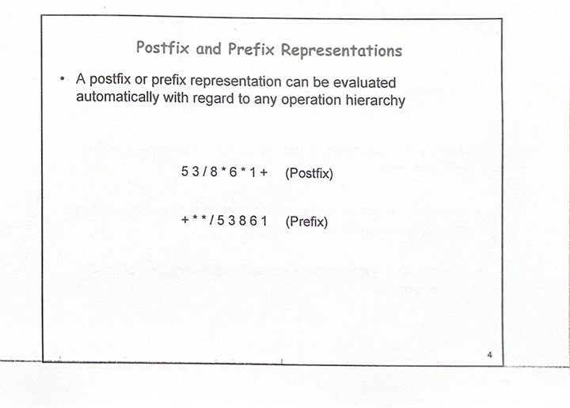
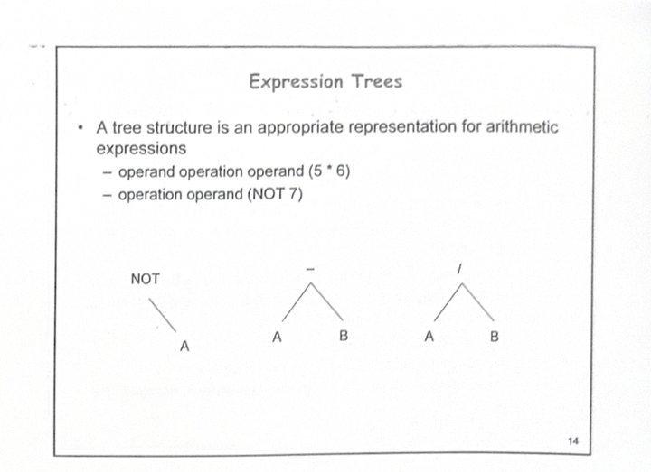
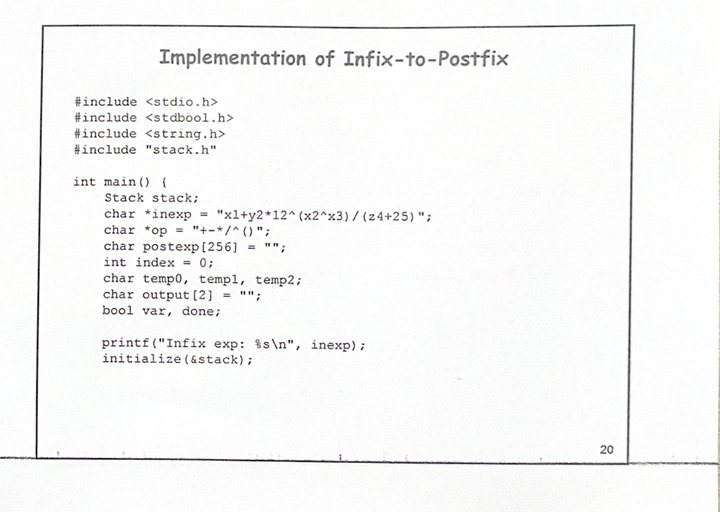
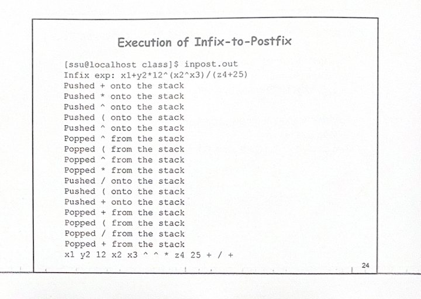

主題 1–2
Expressions 表達式基本概念 / Infix Expressions 中序表示法
介紹 expression、operand、operator，並說明中序表示法需要優先順序與括號判斷。
本首頁整合所有下拉式 HTML 教學檔，依照學習順序連到各主題頁面。內容包含投影片圖片、動畫流程圖、動畫表格、中文講解、可編輯 C 程式範例與線上編輯器連結。

介紹 expression、operand、operator，並說明中序表示法需要優先順序與括號判斷。

比較後序與前序表示法，並用流程圖說明中序轉後序的基本方法。

說明中序轉前序，並用動畫表格逐步展示 stack 與 output 的變化。

用 stack 計算後序表示式，並說明如何建立 expression tree。

說明 preorder/postorder 與 prefix/postfix 的關係，並進入完整 C 程式實作。
